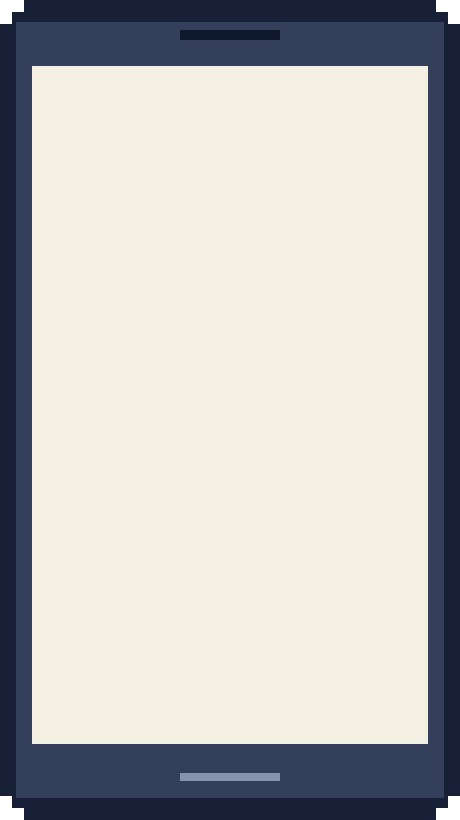

<!doctype html>
<html lang="ja">
<head>
<meta charset="utf-8">
<meta name="viewport" content="width=device-width, initial-scale=1">
<title>原画回収の夜</title>
<link rel="preconnect" href="https://fonts.googleapis.com">
<link rel="preconnect" href="https://fonts.gstatic.com" crossorigin>
<link rel="stylesheet" href="https://fonts.googleapis.com/css2?family=BIZ+UDPGothic:wght@400;700&display=swap">
<style>
  /* One night as a 制作進行 (a PC game), drawn at 1920x1080 and scaled to the window.
     The map is the whole screen: press a place and what you know and can do there appears beside it. */
  :root {
    --navy: #1f2a44; --navy-2: #2a3654; --cream: #fdf3dc; --ink: #1d2236; --ink-soft: #464d68;
    --yellow: #ffe082; --line: #1a2036; --red: #c8323a; --orange: #9a5200; --green: #167a4d; --gray: #b9bfcc;
    --font: "BIZ UDPGothic", "Hiragino Kaku Gothic ProN", "Yu Gothic", "Meiryo", "IPAPGothic", sans-serif;
    color-scheme: dark;
  }
  html, body { height: 100%; margin: 0; background: #0b1020; overflow: hidden; }
  body { color: #fff; font-family: var(--font); user-select: none; -webkit-user-select: none; }
  button { font: inherit; color: inherit; cursor: pointer; }
  button:focus-visible { outline: 3px solid var(--yellow); outline-offset: 2px; }
  #app { position: relative; width: 100%; height: 100%; }
  .box { position: absolute; overflow: hidden; }
  .stage { position: absolute; left: 0; top: 0; width: 1920px; height: 1080px; transform-origin: 0 0; }
  #map { position: absolute; left: 0; top: 0; }
  .sky { position: absolute; inset: 0; pointer-events: none; background: linear-gradient(#8fb4ec, #f0c38e); mix-blend-mode: screen; opacity: 0; }

  /* places */
  .node { position: absolute; transform: translate(-50%, -50%); width: 150px; height: 120px; border: 0; padding: 0; background: transparent; display: flex; flex-direction: column; align-items: center; justify-content: flex-end; }
  .node .ic { position: relative; width: 72px; height: 58px; image-rendering: pixelated; }
  .node .ic::before, .node .ic::after { content: ""; position: absolute; }
  .node.home .ic::before { left: 6px; right: 6px; bottom: 0; height: 36px; background: #d9cfb8; box-shadow: inset 0 -6px 0 #b6aa8e, 0 0 0 4px var(--line); }
  .node.home .ic::after { left: 0; right: 0; top: 0; height: 26px; background: #a8443c; clip-path: polygon(50% 0, 100% 100%, 0 100%); }
  .node.home.lit .ic::before { background: linear-gradient(#d9cfb8 0 8px, #ffd27a 8px 20px, #d9cfb8 20px); }
  .node.office .ic { width: 110px; height: 80px; }
  .node.office .ic::before { inset: 0; background: repeating-linear-gradient(90deg, #47557e 0 14px, #ffd27a 14px 22px, #47557e 22px 30px); box-shadow: inset 0 0 0 6px #2f3a5c, 0 0 0 4px var(--line); }
  .node.office .ic::after { left: 10px; right: 10px; top: -22px; height: 22px; background: var(--yellow); box-shadow: 0 0 0 4px var(--line); }
  .node.konbini .ic::before { left: 0; right: 0; bottom: 0; height: 40px; background: #eef2f7; box-shadow: inset 0 -12px 0 #9fd8ff, 0 0 0 4px var(--line); }
  .node.konbini .ic::after { left: 0; right: 0; top: 10px; height: 10px; background: linear-gradient(90deg, #2f9e5b 0 33%, #f3b400 33% 66%, #d23c3c 66%); box-shadow: 0 0 0 4px var(--line); }
  .node.famires .ic::before { left: 4px; right: 4px; bottom: 0; height: 36px; background: #f2e3c6; box-shadow: inset 0 -10px 0 #ffd27a, 0 0 0 4px var(--line); }
  .node.famires .ic::after { left: 22px; width: 28px; top: 0; height: 18px; background: #d23c3c; box-shadow: 0 0 0 4px var(--line); }
  .node .nm { margin-top: 8px; padding: 2px 10px; background: var(--navy); color: #fff; font-size: 24px; font-weight: 700; white-space: nowrap; box-shadow: 0 0 0 3px var(--line); }
  .node .nm small { font-size: 20px; margin-left: 6px; color: #ffe8a8; }
  .node .chip { position: absolute; top: -26px; left: 50%; transform: translateX(-50%); padding: 3px 10px; font-size: 21px; font-weight: 700; white-space: nowrap; background: var(--cream); color: var(--ink); box-shadow: 0 0 0 3px var(--line); }
  .node .chip.good { background: #c9f0d6; } .node .chip.warn { background: #ffe1a8; } .node .chip.bad { background: #ffd0d0; } .node .chip.mute { background: #d6dae4; color: #3a405a; }
  .node:hover .nm, .node:focus-visible .nm { background: #3a4a78; }
  .node.on .nm { background: var(--yellow); color: var(--ink); } .node.on .nm small { color: #6b4a00; }
  .node.here::after { content: ""; position: absolute; left: 50%; bottom: 34px; width: 150px; height: 40px; transform: translateX(-50%); border-radius: 50%; box-shadow: 0 0 0 4px rgba(255, 224, 130, .75); pointer-events: none; }
  .car { position: absolute; width: 62px; height: 36px; margin: -60px 0 0 30px; pointer-events: none; z-index: 2; }
  .car i { position: absolute; left: 0; top: 0; width: 62px; height: 26px; background: #f1f4fa; box-shadow: inset -20px 0 0 #c9d6ea, inset 0 -6px 0 #9aa6bf, 0 0 0 3px var(--line); }
  .car i::before { content: ""; position: absolute; left: 6px; top: 4px; width: 26px; height: 10px; background: #5f7fb5; }
  .car b, .car u { position: absolute; top: 22px; width: 14px; height: 14px; background: #222; box-shadow: 0 0 0 3px var(--line); }
  .car b { left: 8px; } .car u { right: 8px; }

  /* the heads-up corner */
  .hud { position: absolute; left: 20px; top: 20px; width: 520px; background: rgba(15, 20, 36, .92); box-shadow: 0 0 0 4px var(--line); padding: 14px 20px 16px; display: flex; flex-direction: column; gap: 8px; }
  .hud .l0 { font-size: 20px; color: #c9d1e6; font-weight: 700; }
  .hud .l1 { display: flex; align-items: baseline; gap: 16px; }
  .hud .clk { font-size: 58px; font-weight: 700; line-height: 1; letter-spacing: 1px; }
  .hud .left { font-size: 22px; font-weight: 700; color: #ffe8a8; }
  .hud .sta { display: flex; align-items: center; gap: 12px; font-size: 22px; font-weight: 700; }
  .hud .bar { flex: 1; height: 18px; background: #2a3150; box-shadow: 0 0 0 3px var(--line); }
  .hud .bar i { display: block; height: 100%; background: #6fd39a; }
  .hud .bar i.low { background: #ffb347; } .hud .bar i.crit { background: #ff6b6b; }
  .hud .cnt { display: flex; gap: 18px; font-size: 24px; font-weight: 700; }
  .hud .cnt b { font-size: 32px; color: var(--yellow); }
  .hud .say { font-size: 21px; font-weight: 700; padding: 6px 10px; background: #26304d; }
  .hud .say.bad { background: #5a2430; } .hud .say.good { background: #1f4a37; }
  .ctl { position: absolute; right: 20px; top: 20px; display: flex; gap: 10px; }
  .ctl button { min-width: 64px; height: 64px; padding: 0 14px; border: 0; background: var(--navy); color: #fff; font-size: 24px; font-weight: 700; box-shadow: 0 0 0 4px var(--line); }
  .log { position: absolute; left: 1330px; top: 912px; width: 570px; height: 148px; box-sizing: border-box; overflow: hidden; background: rgba(15, 20, 36, .9); box-shadow: 0 0 0 4px var(--line); padding: 10px 16px; display: flex; flex-direction: column; gap: 5px; pointer-events: none; }
  .log div { font-size: 20px; line-height: 1.35; color: #dfe4f2; }
  .log div:first-child { color: #fff; font-weight: 700; }
  .log div.good { color: #9ee6b8; } .log div.warn { color: #ffd38a; } .log div.bad { color: #ff9b9b; }
  .log span { color: #9aa3bd; margin-right: 8px; font-weight: 400; }

  /* the right-hand column: the list of animators, or the place you pressed (what you know, then what you can do) */
  .side { position: absolute; left: 1330px; top: 104px; width: 570px; height: 790px; background: var(--cream); color: var(--ink); box-shadow: 0 0 0 5px var(--line); display: flex; flex-direction: column; }
  .side .hd { background: var(--navy); color: #fff; padding: 12px 20px; display: flex; align-items: center; gap: 12px; flex: none; }
  .side .hd b { font-size: 32px; } .side .hd span { font-size: 22px; color: #c9d1e6; }
  .side .hd .x { margin-left: auto; height: 52px; padding: 0 16px; border: 0; background: #3a4566; color: #fff; font-size: 22px; font-weight: 700; }
  .side .sc { flex: 1; overflow-y: auto; min-height: 0; }
  .side .who { padding: 12px 20px 6px; border-bottom: 3px dashed #e0d2ae; }
  .side .who h3 { margin: 0 0 6px; font-size: 27px; } .side .who h3 small { font-size: 21px; color: var(--ink-soft); margin-left: 10px; }
  .side .row { display: grid; grid-template-columns: 190px minmax(0, 1fr); gap: 10px; font-size: 23px; padding: 3px 0; line-height: 1.35; }
  .side .row .k { color: var(--ink-soft); font-weight: 700; } .side .row .v { font-weight: 700; } .side .row .v small { font-size: 19px; color: var(--ink-soft); }
  .side .say { margin: 8px 0; padding: 8px 14px; background: #fff3cf; box-shadow: inset 5px 0 0 var(--orange); font-size: 24px; font-weight: 700; line-height: 1.35; }
  .side .say small { display: block; font-size: 19px; color: var(--ink-soft); }
  .side .acts { padding: 10px 20px 14px; display: flex; flex-direction: column; gap: 8px; }
  .side .acts h4 { margin: 4px 0 0; font-size: 21px; color: var(--ink-soft); }
  .side .tip { padding: 10px 20px; font-size: 21px; color: var(--ink-soft); font-weight: 700; border-bottom: 3px dashed #e0d2ae; }
  .side .li { width: 100%; border: 0; border-bottom: 3px dashed #e0d2ae; background: transparent; color: var(--ink); text-align: left; padding: 10px 20px; display: grid; grid-template-columns: minmax(0, 1fr) auto; gap: 4px 12px; }
  .side .li:hover, .side .li:focus-visible { background: #fff6dc; }
  .side .li b { font-size: 25px; } .side .li b small { font-size: 20px; color: var(--ink-soft); margin-left: 8px; }
  .side .li .st { font-size: 21px; font-weight: 700; padding: 2px 10px; align-self: center; background: #e7e2d4; }
  .side .li .st.good { background: #c9f0d6; } .side .li .st.warn { background: #ffe1a8; } .side .li .st.bad { background: #ffd0d0; }
  .side .li .m { grid-column: 1 / -1; font-size: 21px; font-weight: 700; color: #5a3a00; }
  .cmd { min-height: 58px; border: 0; background: var(--navy); color: #fff; font-size: 23px; font-weight: 700; padding: 8px 16px; text-align: left; display: flex; justify-content: space-between; align-items: center; gap: 12px; }
  .cmd small { font-size: 20px; color: #c9d1e6; white-space: nowrap; }
  .cmd.pri { background: #1f5fbf; } .cmd.warn { background: #8a3b2a; }
  .cmd:disabled { background: var(--gray); color: #2f3550; cursor: not-allowed; }
  .cmd:disabled small { color: #2f3550; }
  .cmd:not(:disabled):hover { filter: brightness(1.15); }

  /* the phone, brought up in front of you when it rings */
  .pop-bg { position: fixed; inset: 0; z-index: 30; background: rgba(8, 10, 18, .55); }
  .phone { position: absolute; left: 50%; top: 50%; width: 460px; height: 820px; }
  .phone img { position: absolute; inset: 0; width: 100%; height: 100%; image-rendering: pixelated; }
  .scr { position: absolute; left: 32px; top: 66px; width: 396px; height: 678px; background: #f5efe0; color: var(--ink); display: flex; flex-direction: column; }
  .scr .bar { background: var(--navy); color: #fff; height: 64px; padding: 0 20px; display: flex; align-items: center; justify-content: space-between; font-size: 22px; font-weight: 700; flex: none; }
  .scr .body { flex: 1; padding: 22px 20px; display: flex; flex-direction: column; gap: 14px; overflow-y: auto; }
  .scr .ring { font-size: 22px; font-weight: 700; color: var(--ink-soft); text-align: center; margin-top: 40px; }
  .scr .caller { font-size: 34px; font-weight: 700; text-align: center; }
  .scr .note { font-size: 17px; color: var(--ink-soft); text-align: center; line-height: 1.5; }
  .scr .txt { background: #fff; padding: 14px 16px; font-size: 21px; font-weight: 700; line-height: 1.55; box-shadow: inset 4px 0 0 var(--navy); }
  .scr .btns { padding: 0 20px 20px; display: flex; flex-direction: column; gap: 10px; flex: none; }
  .scr .btns button { min-height: 62px; border: 0; background: var(--navy); color: #fff; font-size: 20px; font-weight: 700; padding: 6px 12px; }
  .scr .btns button.ok { background: var(--green); } .scr .btns button.no { background: #7a8098; }

  /* dialogs */
  .modal-bg { position: fixed; inset: 0; z-index: 40; background: rgba(8, 10, 18, .72); display: grid; place-items: center; padding: 16px; overflow-y: auto; }
  .card { width: min(720px, 100%); background: var(--cream); color: var(--ink); box-shadow: 0 0 0 5px var(--line), 10px 10px 0 5px rgba(0, 0, 0, .3); padding: 22px 26px; display: flex; flex-direction: column; gap: 14px; }
  .card .k { display: inline-block; align-self: flex-start; background: var(--navy); color: #fff; font-size: 14px; font-weight: 700; padding: 2px 10px; }
  .card h2 { margin: 0; font-size: 28px; }
  .card p { margin: 0; font-size: 16px; line-height: 1.6; }
  .card ul { margin: 0; padding-left: 22px; display: grid; gap: 6px; font-size: 16px; line-height: 1.55; }
  .card .rows { display: flex; flex-direction: column; }
  .card .row { display: grid; grid-template-columns: minmax(0, 1fr) auto; gap: 10px; padding: 6px 2px; border-bottom: 2px dashed #e0d2ae; font-size: 16px; font-weight: 700; }
  .card .v.good { color: var(--green); } .card .v.warn { color: var(--orange); } .card .v.bad { color: var(--red); }
  .card .acts { display: flex; flex-wrap: wrap; gap: 10px; }
  .card .acts button { flex: 1 1 200px; height: 62px; border: 0; background: var(--navy); color: #fff; font-size: 19px; font-weight: 700; }
  .card .acts button.pri { background: var(--yellow); color: var(--ink); }
  .rank { font-size: 76px; font-weight: 700; line-height: 1; }
  .toast { position: fixed; left: 50%; top: 18px; transform: translateX(-50%); z-index: 35; background: var(--navy); color: #fff; padding: 12px 20px; font-size: 17px; font-weight: 700; box-shadow: 0 0 0 3px var(--line); pointer-events: none; max-width: 80vw; }
  .busy { cursor: progress; } .busy .side .acts { opacity: .6; }
</style>
</head>
<body>
<div id="app">
  <div class="box" id="box">
    <div class="stage" id="stage">
      <svg id="map" width="1920" height="1080" viewBox="0 0 1920 1080" aria-hidden="true"></svg>
      <div class="sky" id="sky"></div>
      <div id="nodes"></div>
      <div id="hud"></div>
      <div id="side"></div>
      <div id="log"></div>
    </div>
  </div>
  <div id="toast"></div>
  <div id="modal-root"></div>
</div>
<script id="engine">
const Engine = (() => {
  "use strict";
  // One night of 原画回収, played as you (a 制作進行). Time is in minutes from 0:00 of the first day:
  // the night starts at 22:00 at the studio and ends at 9:00, when the desk hands the cuts to 動仕.
  // Every action costs time; the cuts count only if they are inside the studio by 9:00.
  const H = 60, START = 22 * H, END = 33 * H, GOAL = 60, SPEED = 12, PARK = 3, EP = 7;
  const PLACES = {
    office: { name: "スタジオ", kind: "office", x: 760, y: 610 },
    nakano: { name: "中野", kind: "home", x: 1100, y: 520 },
    nerima: { name: "練馬", kind: "home", x: 1000, y: 290 },
    ogikubo: { name: "荻窪", kind: "home", x: 560, y: 480 },
    kichijoji: { name: "吉祥寺", kind: "home", x: 380, y: 650 },
    mitaka: { name: "三鷹", kind: "home", x: 320, y: 900 },
    tokorozawa: { name: "所沢", kind: "home", x: 150, y: 430 },
    konbiniS: { name: "コンビニ（環八）", kind: "konbini", x: 650, y: 840 },
    konbiniN: { name: "コンビニ（新青梅）", kind: "konbini", x: 740, y: 270 },
    famires: { name: "ファミレス", kind: "famires", x: 450, y: 345 },
  };
  const ROADS = [["office", "nakano"], ["office", "ogikubo"], ["office", "konbiniS"], ["office", "nerima"], ["nakano", "nerima"], ["ogikubo", "famires"], ["ogikubo", "kichijoji"], ["kichijoji", "mitaka"], ["kichijoji", "konbiniS"], ["konbiniS", "mitaka"], ["famires", "tokorozawa"], ["nerima", "konbiniN"], ["konbiniN", "famires"], ["konbiniN", "ogikubo"]];
  // the six animators holding this episode's cuts tonight (ranges are rolled each night)
  const ANIMS = [
    { id: "a1", name: "高槻 透", home: "mitaka", trait: "veteran", label: "ベテラン・几帳面", cuts: [15, 18], hours: [2, 3], trust: [0.85, 0.95], mood: 70 },
    { id: "a2", name: "森下 ゆい", home: "nakano", trait: "rookie", label: "若手・真面目だが遅い", cuts: [13, 16], hours: [7, 9], trust: [0.6, 0.75], mood: 70 },
    { id: "a3", name: "石黒 剛", home: "kichijoji", trait: "moody", label: "気分屋・腕は確か", cuts: [19, 23], hours: [7.5, 9.5], trust: [0.35, 0.5], mood: 55 },
    { id: "a4", name: "小野寺 葵", home: "nerima", trait: "busy", label: "掛け持ち・他社優先", cuts: [14, 17], hours: [4, 5], trust: [0.5, 0.6], mood: 60 },
    { id: "a5", name: "柴田 健", home: "ogikubo", trait: "runner", label: "逃げ癖あり", cuts: [11, 14], hours: [3.5, 5], trust: [0.3, 0.45], mood: 50 },
    { id: "a6", name: "原 千尋", home: "tokorozawa", trait: "far", label: "遠方・仕事が速い", cuts: [14, 16], hours: [4, 5.5], trust: [0.85, 0.95], mood: 75 },
  ];
  const STA_START = 50;

  function rnd(s) {
    let a = (s.r = (s.r + 0x6d2b79f5) | 0);
    let t = Math.imul(a ^ (a >>> 15), 1 | a);
    t = (t + Math.imul(t ^ (t >>> 7), 61 | t)) ^ t;
    return ((t ^ (t >>> 14)) >>> 0) / 4294967296;
  }
  const between = (s, r) => r[0] + (r[1] - r[0]) * rnd(s);
  const round10 = (m) => Math.round(m / 10) * 10;
  const clock = (t) => `${Math.floor(t / H) % 24}:${String(Math.floor(t % H)).padStart(2, "0")}`;
  const fam = (name) => name.split(" ")[0];
  const animOf = (s, id) => s.anims.find((a) => a.id === id);
  const ready = (a) => Math.floor(a.done + 1e-9) - a.given;
  const finished = (a) => a.done >= a.cuts - 1e-9;
  function log(s, text, tone = "") { s.log.unshift({ t: s.t, text, tone }); if (s.log.length > 120) s.log.length = 120; }

  function newGame(seed = 1) {
    const s = { v: 1, seed, r: (seed * 2654435761) >>> 0 || 1, t: START, at: "office", sta: STA_START, car: 0, delivered: 0, gifts: 0, phase: "play",
      anims: [], events: [], calls: [], callSeq: 0, log: [], desk: 0, favor: 0, dozed: 0, bike: null, waitWith: null, result: null, sleptAt: null,
      stats: { answered: 0, ignored: 0, rushed: 0, gifts: 0, actions: 0, drove: 0 } };
    for (const d of ANIMS) {
      const cuts = Math.round(between(s, d.cuts)), hours = between(s, d.hours), trust = between(s, d.trust);
      const said = round10(START + hours * H * (0.55 + 0.45 * trust)); // the less reliable, the earlier they say
      s.anims.push({ id: d.id, name: d.name, home: d.home, place: d.home, trait: d.trait, label: d.label, cuts, rate: cuts / hours, trust, mood: d.mood, mood0: d.mood,
        done: 0, given: 0, said, rushUntil: 0, boostUntil: 0, stopUntil: 0, stopWhy: null, doneAt: null, known: { place: d.home, said, seen: null, note: null } });
    }
    const at = (h) => round10(START + h * H);
    const ev = (h, kind, aid) => s.events.push({ at: at(h), kind, aid, fired: false });
    // the trouble each animator brings, at a different time every night
    const busy = animOf(s, "a4"); busy.stopUntil = at(between(s, [3.5, 5])); busy.stopWhy = "other";
    ev(between(s, [1.5, 2.5]), "busy", "a4");
    ev(between(s, [2, 3.5]), "mood", "a3");
    ev(between(s, [1.5, 3]), "escape", "a5");
    ev(between(s, [3.5, 5]), "sleep", "a2");
    ev(between(s, [2.5, 4]), "blank", "a2");
    ev(between(s, [2.5, 3.5]), "bike", "a6");
    ev(between(s, [0.5, 1.2]), "desk1");
    ev(between(s, [6, 7]), "desk2");
    ev(between(s, [4.5, 6]), "colleague");
    ev(10, "bikeArrive");
    s.events.sort((x, y) => x.at - y.at);
    log(s, `22:00、スタジオ。第${EP}話の原画を、朝9時の動仕撒きまでに集める。`);
    return s;
  }

  // ---------- roads ----------
  const dist = (a, b) => Math.hypot(PLACES[a].x - PLACES[b].x, PLACES[a].y - PLACES[b].y);
  function route(s, from, to) {
    if (from === to) return { min: 0, path: [from] };
    const d = {}, prev = {}, left = new Set(Object.keys(PLACES));
    for (const k of left) d[k] = Infinity;
    d[from] = 0;
    while (left.size) {
      let u = null;
      for (const k of left) if (u === null || d[k] < d[u]) u = k;
      left.delete(u);
      if (u === to) break;
      for (const [a, b] of ROADS) {
        const v = a === u ? b : b === u ? a : null;
        if (!v || !left.has(v)) continue;
        const nd = d[u] + dist(u, v) / SPEED;
        if (nd < d[v]) { d[v] = nd; prev[v] = u; }
      }
    }
    const path = [to];
    while (path[0] !== from) path.unshift(prev[path[0]]);
    const slow = s.sta < 25 ? 1.25 : 1;
    return { min: Math.ceil((d[to] + PARK) * slow), path };
  }

  // ---------- time ----------
  const night = (t) => t >= 27 * H && t < 31 * H; // 3:00-7:00, the worst hours
  function advance(s, minutes, mode) {
    let left = minutes;
    while (left > 0 && s.phase === "play") {
      const dt = Math.min(5, left); left -= dt;
      s.t += dt;
      if (mode === "nap") s.sta = Math.min(100, s.sta + (s.at === "office" ? 0.8 : 0.9) * dt);
      else s.sta -= (mode === "drive" ? 0.1 : 0.075) * (night(s.t) ? 1.35 : 1) * dt;
      for (const a of s.anims) drawFor(s, a, dt);
      fire(s);
      if (s.sta <= 0 && mode !== "nap") {
        s.sta = 15; s.dozed++; left += 45; mode = "doze";
        log(s, "限界だった。気がついたら45分たっていた（居眠り）。", "bad");
      }
      if (s.t >= END) { s.t = END; finish(s, "morning"); }
    }
  }
  function drawFor(s, a, dt) {
    if (finished(a)) return;
    if (s.t <= a.stopUntil) return;
    if (a.stopWhy) a.stopWhy = null;
    let m = 1;
    if (s.waitWith === a.id) m *= 1.4;
    if (a.rushUntil > s.t) m *= 1.7;
    if (a.boostUntil > s.t) m *= 1.25;
    m *= a.mood < 30 ? 0.5 : a.mood < 45 ? 0.75 : a.mood >= 75 ? 1.15 : 1; // the mood shows in the speed
    a.done = Math.min(a.cuts, a.done + (a.rate * m * dt) / H);
    if (finished(a)) {
      a.doneAt = s.t;
      if (a.trait === "veteran" && s.at !== a.place) call(s, "vetDone", a.id); // no need to phone if you are standing there
    }
  }
  function fire(s) {
    for (const e of s.events) {
      if (e.fired || e.at > s.t) continue;
      e.fired = true;
      const a = e.aid ? animOf(s, e.aid) : null;
      if (e.kind === "busy") { if (!finished(a)) call(s, "busy", a.id); }
      else if (e.kind === "mood") { if (!finished(a) && a.mood < 75) { a.stopUntil = s.t + 180; a.stopWhy = "mood"; call(s, "mood", a.id); } }
      else if (e.kind === "escape") { if (s.at !== a.home && a.place === a.home && !finished(a)) { a.place = "famires"; call(s, "escape", a.id); } }
      else if (e.kind === "sleep") { if (!finished(a) && s.at !== a.place) { a.stopUntil = s.t + 180; a.stopWhy = "sleep"; } }
      else if (e.kind === "blank") { if (a.cuts - a.done >= 2) call(s, "blank", a.id); }
      else if (e.kind === "bike") { if (a.given < a.cuts) call(s, "bike", a.id); }
      else if (e.kind === "bikeArrive") bikeArrive(s);
      else call(s, e.kind, null);
    }
  }
  function bikeArrive(s) {
    if (!s.bike) return;
    const a = animOf(s, s.bike.aid), n = ready(a);
    a.given += n; s.delivered += n; s.bike.n = n;
    log(s, n ? `原さんのバイク便が着いた。${n}カット、スタジオに入った。` : "原さんのバイク便が着いたが、中身はなかった（もう回収してあった）。", n ? "good" : "");
  }

  // ---------- phone ----------
  const CALLS = {
    desk1: { from: "デスク（会社）", text: () => `第${EP}話、朝9時に動仕に撒くから、最低${GOAL}カットは会社に入れといて。よろしく。`, choices: [["ok", "わかりました"]], ign: (s) => { s.desk--; return "デスクの電話に出なかった。"; } },
    desk2: { from: "デスク（会社）", text: (s) => {
      const up = s.anims.filter((a) => finished(a) && a.given < a.cuts && !(s.bike && s.bike.aid === a.id));
      for (const a of up) a.known.seen = { t: s.t, n: ready(a), fin: true, why: null };
      return `いま何カット？ 会社には${s.delivered}カット入ってる。${up.length ? `${up.map((a) => fam(a.name) + "さん").join("と")}から「上がった」って連絡あったよ。` : "誰からも「上がった」って連絡はない。"}`;
    }, choices: [["ok", "わかりました"]], ign: (s) => { s.desk--; return "デスクの電話に出なかった。"; } },
    busy: { from: "小野寺 葵", text: (s, a) => `すみません、他社の締めが押してて……こっちに戻れるのは${clock(a.stopUntil)}くらいです。`, choices: [["push", "そこを何とか、こっちを先に"], ["ok", "わかりました"]] },
    mood: { from: "石黒 剛", text: () => "なんか今日は乗らないんだよね。ちょっと休むわ。", choices: [["talk", "話を聞く（20分）"], ["push", "朝までに頼みますよ"]], ign: (s, a) => { a.stopUntil += 60; return "石黒さんの電話に出なかった。"; } },
    escape: { from: "柴田 健", text: () => "あ、どうも……家だと集中できなくて、ファミレスで描いてます。", choices: [["ok", "わかりました"]], ign: (s, a) => { a.mood -= 5; return "柴田さんの電話に出なかった。"; } },
    blank: { from: "森下 ゆい", text: () => "あの……白紙のカットが2つあって、どうしても描けなくて……", choices: [["back", "白紙で返してもらう（2カット減る）"], ["push", "なんとか描いて"]], ign: (s, a) => { a.cuts -= 2; a.mood -= 5; return "森下さんの電話に出なかった。白紙の2カットは返された。"; } },
    bike: { from: "原 千尋", text: () => "上がりそうなので、バイク便で会社に送りましょうか？ 朝8時には着きます。", choices: [["bike", "バイク便で（デスクに嫌味を言われる）"], ["ok", "取りに行きます"]] },
    vetDone: { from: "高槻 透", text: () => "上がってますよ。いつでも取りに来てください。", choices: [["ok", "すぐ行きます"]] },
    colleague: { from: "同僚の進行・真壁", text: () => "車がエンストした！ スタジオの近くなんだけど、拾ってくれない？", choices: [["help", "拾いに行く（40分）"], ["no", "ごめん、無理"]] },
  };
  function call(s, kind, aid) {
    if (s.phase !== "play") return;
    s.calls.push({ id: ++s.callSeq, kind, aid, at: s.t, from: CALLS[kind].from });
  }
  // answering costs time (you pull over); not answering is free but you learn nothing
  function answer(s, id, k) {
    const c = s.calls.find((x) => x.id === id);
    if (!c) return null;
    const def = CALLS[c.kind], a = c.aid ? animOf(s, c.aid) : null;
    s.calls.splice(s.calls.indexOf(c), 1);
    if (k === "ignore") {
      s.stats.ignored++;
      const text = def.ign ? def.ign(s, a) : `${c.from}の電話に出なかった。`;
      log(s, text, "warn");
      return { text };
    }
    s.stats.answered++;
    let min = 5, text = "";
    if (c.kind === "busy") {
      if (k === "push") { a.stopUntil = s.t; a.stopWhy = null; a.mood -= 20; text = "小野寺さんに、こっちを先にやってもらうことにした（機嫌は悪くなった）。"; }
      else { a.known.said = round10(a.stopUntil + ((a.cuts - a.done) / a.rate) * H); a.known.note = `他社の作業中（${clock(a.stopUntil)}まで）`; text = `小野寺さんは${clock(a.stopUntil)}まで他社の作業。上がりは${clock(a.known.said)}ごろになりそう。`; }
    } else if (c.kind === "mood") {
      if (k === "talk") { min = 20; a.stopUntil = s.t; a.stopWhy = null; a.mood += 12; text = "石黒さんの話を20分聞いた。描く気になってくれた。"; }
      else { a.mood -= 10; a.known.note = "手が止まっている"; text = "石黒さんに「朝までに」と念を押した。手は止まったまま。"; }
    } else if (c.kind === "escape") { a.known.place = "famires"; a.known.note = "ファミレスで描いている"; text = "柴田さんはファミレスにいる。"; }
    else if (c.kind === "blank") {
      if (k === "back") { a.cuts -= 2; a.mood += 5; text = "森下さんの白紙の2カットを返してもらった。"; }
      else { a.mood -= 10; a.rate *= 0.85; text = "森下さんに、なんとか描いてもらうことにした（遅くなる）。"; }
    } else if (c.kind === "bike") {
      if (k === "bike") { s.bike = { aid: a.id, n: 0 }; s.desk--; a.known.note = "バイク便で朝8時に会社へ"; text = "原さんの分は、バイク便で朝8時に会社に届く。"; }
      else text = "原さんの分は、取りに行くと伝えた。";
    } else if (c.kind === "vetDone") { a.known.seen = { t: s.t, n: ready(a), fin: true, why: null }; text = "高槻さんは上がっている。"; }
    else if (c.kind === "colleague") {
      if (k === "help") { min = 40; s.favor++; text = "真壁を拾って会社まで送った（40分。真壁に貸しができた）。"; }
      else text = "真壁の頼みを断った。";
    } else text = `${c.from}：${def.text(s, a)}`;
    log(s, text, k === "push" ? "warn" : "");
    advance(s, min, "act");
    return { text, min };
  }
  const callText = (s, c) => CALLS[c.kind].text(s, c.aid ? animOf(s, c.aid) : null);
  const callChoices = (c) => CALLS[c.kind].choices.map(([k, label]) => ({ k, label }));

  // ---------- what you can do where you are ----------
  const here = (s) => s.anims.filter((a) => a.place === s.at);
  const ACT = {
    collect: { label: "上がった分を回収", min: 10 },
    wait: { label: "横で待つ", min: 30 },
    rush: { label: "急かす", min: 5 },
    gift: { label: "差し入れを渡す", min: 5 },
    talk: { label: "話を聞く", min: 20 },
    wake: { label: "起こす", min: 5 },
    prio: { label: "こっちを先にと頼む", min: 10 },
    buy: { label: "差し入れを買う", min: 10 },
    nap: { label: "仮眠", min: 30 },
    deliver: { label: "原画を置く", min: 5 },
    sleep: { label: "今夜はここまで（帰って寝る）", min: 0 },
  };
  function canDo(s, kind, aid) {
    if (s.phase !== "play") return "夜は終わった";
    if (s.calls.length) return "電話が鳴っている";
    const P = PLACES[s.at], a = aid ? animOf(s, aid) : null;
    if (["collect", "wait", "rush", "gift", "talk", "wake", "prio"].includes(kind)) {
      if (!a || a.place !== s.at) return "ここにいない";
      if (kind === "wake") return a.stopWhy === "sleep" ? "" : "起きている";
      if (kind === "prio") return a.stopWhy === "other" ? "" : "他社の作業はしていない";
      if (a.stopWhy === "sleep" && kind !== "talk") return "寝ている";
      if (kind === "collect") return ready(a) > 0 ? "" : a.given >= a.cuts ? "もう全部回収した" : "上がっているカットがない";
      if (finished(a) && kind !== "gift") return "もう描き終わっている";
      if (kind === "wait") return a.stopWhy === "other" ? "他社の作業中" : a.stopWhy === "mood" || a.stopWhy === "sulk" ? "手が止まっている" : "";
      if (kind === "rush") return a.stopWhy === "other" ? "他社の作業中" : a.rushUntil > s.t ? "もう急かした" : "";
      if (kind === "gift") return s.gifts > 0 ? (a.boostUntil > s.t ? "さっき渡した" : "") : "差し入れを持っていない";
      if (kind === "talk") return a.stopWhy === "sleep" ? "寝ている" : "";
    }
    if (kind === "buy") return P.kind !== "konbini" ? "コンビニではない" : s.gifts >= 3 ? "もう3つ持っている" : "";
    if (kind === "nap") return P.kind !== "konbini" && P.kind !== "office" ? "ここでは寝られない" : s.sta >= 80 ? "まだ眠くない" : "";
    if (kind === "deliver") return P.kind !== "office" ? "スタジオではない" : s.car <= 0 ? "車に原画がない" : "";
    if (kind === "sleep") return P.kind !== "office" ? "スタジオではない" : "";
    return "";
  }
  function napMin(s) { return s.at === "office" ? 60 : 30; }
  function act(s, kind, aid) {
    const why = canDo(s, kind, aid);
    if (why) return { ok: false, text: why };
    const a = aid ? animOf(s, aid) : null;
    s.stats.actions++;
    let text = "", tone = "";
    if (kind === "collect") {
      advance(s, 10, "act");
      const n = ready(a); a.given += n; s.car += n;
      text = `${fam(a.name)}さんから${n}カット回収した。${a.given >= a.cuts ? "これで全部。" : `残り${a.cuts - a.given}カット。`}`; tone = "good";
      a.known.seen = { t: s.t, n: 0, fin: finished(a), why: a.stopWhy };
    } else if (kind === "wait") {
      const before = ready(a);
      s.waitWith = a.id; advance(s, 30, "wait"); s.waitWith = null;
      text = `横で30分待った。${fam(a.name)}さんの上がりは${ready(a)}カット（+${ready(a) - before}）。`;
    } else if (kind === "rush") {
      s.stats.rushed++;
      if (a.mood < 35) { a.stopUntil = s.t + 60; a.stopWhy = "sulk"; a.mood -= 10; text = `${fam(a.name)}さんを急かしたら、へそを曲げて手が止まった。`; tone = "bad"; }
      else { a.rushUntil = s.t + 120; a.mood -= a.trait === "moody" ? 25 : 15; text = `${fam(a.name)}さんを急かした。2時間は急いで描いてくれる（機嫌は悪くなった）。`; tone = "warn"; }
      advance(s, 5, "act");
    } else if (kind === "gift") {
      s.gifts--; s.stats.gifts++; a.mood = Math.min(100, a.mood + 20); a.boostUntil = s.t + 180;
      text = `${fam(a.name)}さんに差し入れを渡した。機嫌がよくなって、少し早く描いてくれる。`; tone = "good";
      advance(s, 5, "act");
    } else if (kind === "talk") {
      advance(s, 20, "act");
      a.mood = Math.min(100, a.mood + 12);
      if (a.stopWhy === "mood" || a.stopWhy === "sulk") { a.stopUntil = s.t; a.stopWhy = null; text = `${fam(a.name)}さんの話を20分聞いた。また描き始めてくれた。`; }
      else text = `${fam(a.name)}さんの話を20分聞いた。機嫌がよくなった。`;
      tone = "good";
    } else if (kind === "wake") {
      a.stopUntil = s.t; a.stopWhy = null; a.mood -= 15;
      text = `寝ていた${fam(a.name)}さんを起こした。描き始めてくれた（機嫌は悪くなった）。`; tone = "warn";
      advance(s, 5, "act");
    } else if (kind === "prio") {
      a.stopUntil = s.t; a.stopWhy = null; a.mood -= 20; a.known.note = null;
      text = `${fam(a.name)}さんに、他社よりこっちを先にと頼み込んだ（機嫌は悪くなった）。`; tone = "warn";
      advance(s, 10, "act");
    } else if (kind === "buy") {
      advance(s, 10, "act"); s.gifts++;
      text = `差し入れ（栄養ドリンクと甘いもの）を買った。${s.gifts}つ持っている。`;
    } else if (kind === "nap") {
      const m = napMin(s); advance(s, m, "nap");
      text = `${m}分、仮眠した。`;
    } else if (kind === "deliver") {
      advance(s, 5, "act");
      if (s.phase === "play") { s.delivered += s.car; text = `原画を${s.car}カット、スタジオに置いた（会社に${s.delivered}カット）。`; s.car = 0; tone = "good"; }
    } else if (kind === "sleep") {
      s.sleptAt = s.t;
      if (s.car) { s.delivered += s.car; s.car = 0; }
      text = "今夜はここまで。帰って寝た。"; finish(s, "slept");
    }
    if (text) log(s, text, tone);
    return { ok: true, text, tone };
  }
  function go(s, to) {
    if (s.phase !== "play") return { ok: false, text: "夜は終わった" };
    if (s.calls.length) return { ok: false, text: "電話が鳴っている" };
    if (to === s.at || !PLACES[to]) return { ok: false, text: "もうここにいる" };
    const r = route(s, s.at, to), from = s.at;
    s.stats.actions++; s.stats.drove += r.min;
    advance(s, r.min, "drive");
    if (s.phase !== "play") return { ok: true, path: r.path, from, text: "着く前に朝9時になった。" };
    s.at = to;
    const text = arrive(s);
    return { ok: true, path: r.path, from, min: r.min, text };
  }
  // what you find when you get there
  function arrive(s) {
    const P = PLACES[s.at], parts = [];
    for (const a of here(s)) {
      const why = a.stopWhy === "sleep" ? "寝ていた" : a.stopWhy === "other" ? `他社の作業中（${clock(a.stopUntil)}まで）` : a.stopWhy === "mood" || a.stopWhy === "sulk" ? "手が止まっていた" : null;
      a.known.place = a.place; a.known.seen = { t: s.t, n: ready(a), fin: finished(a), why: a.stopWhy };
      if (a.stopWhy === "other") { a.known.said = round10(a.stopUntil + ((a.cuts - a.done) / a.rate) * H); a.known.note = `他社の作業中（${clock(a.stopUntil)}まで）`; }
      if (a.stopWhy === "mood") a.known.note = "手が止まっている";
      parts.push(`${fam(a.name)}さん：${a.given >= a.cuts ? "全部回収済み" : `上がり${ready(a)}カット（残り${a.cuts - a.given}）`}${why ? `・${why}` : ""}`);
    }
    // someone you expected here is gone
    for (const a of s.anims) {
      if (a.known.place === s.at && a.place !== s.at) {
        a.known.place = null; a.known.note = "家にいなかった（近くのファミレス？）";
        parts.push(`${fam(a.name)}さんは留守だった。近くのファミレスかもしれない。`);
      }
    }
    const text = `${P.name}に着いた。${parts.join(" ／ ")}`;
    log(s, text, parts.some((p) => /留守|寝て|止まって|他社/.test(p)) ? "warn" : "");
    return text;
  }

  // ---------- the end ----------
  function finish(s, why) {
    if (s.phase !== "play") return;
    if (why === "morning" && s.at === "office" && s.car) { s.delivered += s.car; s.car = 0; }
    if (s.bike && s.t >= START + 10 * H && s.bike.n === 0 && !s.events.find((e) => e.kind === "bikeArrive").fired) bikeArrive(s);
    s.phase = "end";
    const d = s.delivered;
    const grade = d >= GOAL + 25 ? ["S", "余裕を持って撒ける"] : d >= GOAL + 10 ? ["A", "しっかり撒ける"] : d >= GOAL ? ["B", "最低ラインは撒ける"] : d >= GOAL - 15 ? ["C", "足りない（動仕が止まる）"] : ["D", "撒けない"];
    s.result = { why, delivered: d, left: s.car, grade: grade[0], label: grade[1], sta: Math.round(s.sta), allnight: why === "morning",
      moods: s.anims.map((a) => ({ name: a.name, diff: Math.round(a.mood - a.mood0) })), desk: s.desk, favor: s.favor, dozed: s.dozed,
      uncollected: s.anims.reduce((t, a) => t + (a.cuts - a.given), 0) };
    log(s, why === "morning" ? `朝9時。会社に入った原画は${d}カット。` : `会社に入った原画は${d}カット。`, d >= GOAL ? "good" : "bad");
  }

  // ---------- what you believe (the 見立て) ----------
  function moodWord(m) { return m >= 75 ? "上機嫌" : m >= 50 ? "ふつう" : m >= 30 ? "不機嫌" : "かなり怒っている"; }
  function trustWord(a) { return a.trust >= 0.8 ? "言った時間にはだいたい上がる人" : a.trust >= 0.55 ? "言った時間より少し遅れがち" : "言った時間はあてにならない"; }
  function mutter(s, a) {
    const k = a.known;
    if (s.bike && s.bike.aid === a.id) return "バイク便で朝8時に会社に届く";
    if (a.given >= a.cuts) return "全部回収した";
    if (k.place === null) return "どこにいるかわからない。近くのファミレスかもしれない";
    if (k.seen && k.seen.fin) return "上がっている。取りに行けばいい";
    if (k.note && /他社/.test(k.note) && s.t < k.said) return `他社の作業が終わるまで手がつかない。上がりは${clock(k.said)}ごろ`;
    if (k.seen && (k.seen.why === "sleep") && s.t - k.seen.t < 180) return "寝ていた。起こさないと進まない";
    if (k.note === "手が止まっている") return "手が止まっている。話を聞くか、急かすか";
    const frac = (s.t - START) / Math.max(30, k.said - START);
    if (frac >= 1) return a.trust >= 0.8 ? "もう上がっているはず" : "言った時間は過ぎた。行ってみないとわからない";
    if (frac >= 0.65) return a.trust >= 0.8 ? "もうすぐ上がるはず" : a.trust >= 0.55 ? "そろそろのはずだが、少し遅れそう" : "言った時間は近いが、あてにならない";
    return "まだ早い";
  }
  function overall(s) {
    const left = END - s.t, back = route(s, s.at, "office").min;
    if (s.at !== "office" && left - back < 30) return { tone: "bad", text: `そろそろ戻らないと9時に間に合わない（スタジオまで${back}分）` };
    if (s.sta < 25) return { tone: "bad", text: "眠くて運転が遅い。どこかで仮眠を" };
    if (s.delivered + s.car >= GOAL) return { tone: "good", text: s.car && s.at !== "office" ? "目標分は車にある。9時までに会社に置けば撒ける" : "目標には届いた。あとは上乗せ" };
    return { tone: "", text: `目標まであと${GOAL - s.delivered - s.car}カット` };
  }

  return { H, START, END, GOAL, EP, PLACES, ROADS, ACT, STA_START, newGame, route, go, act, canDo, answer, callText, callChoices, here, clock, fam, ready, finished, animOf, moodWord, trustWord, mutter, overall, napMin, advance };
})();
if (typeof module !== "undefined") module.exports = Engine;
</script>
<script>
(() => {
  "use strict";
  const E = Engine, SAVE_KEY = "animep.night";
  const P = E.PLACES;
  let s = null, k = 1, toastTimer = 0;
  const ui = { sel: null, modal: null, phone: "ring", anim: null };
  const esc = (t) => String(t).replace(/[&<>"]/g, (c) => ({ "&": "&amp;", "<": "&lt;", ">": "&gt;", '"': "&quot;" })[c]);
  const $ = (id) => document.getElementById(id);
  const left = (t) => { const m = Math.max(0, E.END - t); return `${Math.floor(m / 60)}時間${String(m % 60).padStart(2, "0")}分`; };

  // ---------- the map (drawn once) ----------
  function drawMap() {
    let r = 7;
    const rand = () => { r = (r * 16807) % 2147483647; return r / 2147483647; };
    const out = [`<rect width="1920" height="1080" fill="#0e1528"/>`];
    // city blocks with a few lit windows
    for (let y = 30; y < 1080; y += 86) for (let x = 20; x < 1920; x += 112) {
      const w = 70 + rand() * 30, h = 50 + rand() * 24;
      out.push(`<rect x="${x}" y="${y}" width="${w.toFixed(0)}" height="${h.toFixed(0)}" fill="#151e36"/>`);
      for (let i = 0; i < 3; i++) if (rand() < 0.35) out.push(`<rect x="${(x + 8 + rand() * (w - 20)).toFixed(0)}" y="${(y + 8 + rand() * (h - 18)).toFixed(0)}" width="6" height="6" fill="#ffd27a" opacity="${(0.25 + rand() * 0.5).toFixed(2)}"/>`);
    }
    // a river through the west side
    out.push(`<path d="M0 560 C 200 520, 260 700, 420 720 S 700 960, 760 1080" stroke="#13284a" stroke-width="40" fill="none"/>`);
    const line = (a, b, w, c, extra = "") => `<line x1="${P[a].x}" y1="${P[a].y}" x2="${P[b].x}" y2="${P[b].y}" stroke="${c}" stroke-width="${w}" stroke-linecap="round" ${extra}/>`;
    for (const [a, b] of E.ROADS) out.push(line(a, b, 34, "#1a2036"));
    for (const [a, b] of E.ROADS) out.push(line(a, b, 26, "#36426a"));
    for (const [a, b] of E.ROADS) out.push(line(a, b, 2, "#8d97b5", 'stroke-dasharray="12 16"'));
    $("map").innerHTML = out.join("");
  }

  // ---------- what's drawn every turn ----------
  function chipFor(id) {
    const p = P[id];
    if (p.kind === "office") return [`会社に ${s.delivered}`, s.delivered >= E.GOAL ? "good" : ""];
    if (p.kind === "konbini") return ["仮眠・差し入れ", "mute"];
    if (p.kind === "famires") { const a = s.anims.find((x) => x.known.place === "famires" && x.given < x.cuts); return a ? [`${E.fam(a.name)}さんがいる`, "warn"] : ["深夜営業", "mute"]; }
    const a = s.anims.find((x) => x.home === id);
    if (!a) return ["", ""];
    if (s.bike && s.bike.aid === a.id) return ["バイク便", "mute"];
    if (a.given >= a.cuts) return ["回収済み", "mute"];
    if (a.known.place !== id) return ["留守", "bad"];
    if (a.known.seen && a.known.seen.fin) return ["上がってる", "good"];
    if (a.known.seen && a.known.seen.why === "sleep" && s.t - a.known.seen.t < 180) return ["寝てる", "bad"];
    if (a.known.note === "手が止まっている") return ["止まってる", "bad"];
    return [`上がり ${E.clock(a.known.said)}`, s.t >= a.known.said ? "warn" : ""];
  }
  function nodes() {
    return Object.keys(P).map((id) => {
      const p = P[id], a = s.anims.find((x) => x.home === id), [chip, tone] = chipFor(id);
      const who = a ? `<small>${esc(E.fam(a.name))}</small>` : "";
      const cls = ["node", p.kind, ui.sel === id ? "on" : "", s.at === id ? "here" : "", a && a.place === id && !E.finished(a) ? "lit" : ""].join(" ");
      return `<button class="${cls}" data-act="sel" data-v="${id}" style="left:${p.x}px;top:${p.y}px" aria-label="${esc(p.name)}">${chip ? `<span class="chip ${tone}">${esc(chip)}</span>` : ""}<span class="ic"></span><span class="nm">${esc(p.name)}${who}</span></button>`;
    }).join("") + `<div class="car" id="car" style="left:${P[s.at].x}px;top:${P[s.at].y}px"><i></i><b></b><u></u></div>`;
  }
  function hud() {
    const sta = Math.max(0, Math.round(s.sta)), word = sta >= 60 ? "元気" : sta >= 35 ? "疲れている" : sta >= 20 ? "眠い" : "限界";
    const o = E.overall(s);
    return `<div class="hud"><div class="l0">制作進行 ・ 第${E.EP}話の原画回収</div>
      <div class="l1"><span class="clk" id="clk">${E.clock(s.t)}</span><span class="left" id="left">朝9時の撒きまで あと${left(s.t)}</span></div>
      <div class="sta">体力 <span class="bar"><i class="${sta < 20 ? "crit" : sta < 35 ? "low" : ""}" style="width:${sta}%"></i></span> ${word}</div>
      <div class="cnt"><span>車の中 <b>${s.car}</b></span><span>会社 <b>${s.delivered}</b>/${E.GOAL}</span><span>差し入れ <b>${s.gifts}</b></span></div>
      <div class="say ${o.tone}">見立て：${esc(o.text)}</div></div>
      <div class="ctl"><button data-act="help" aria-label="遊び方">？</button><button data-act="restartAsk">最初から</button></div>`;
  }
  function logBox() { return `<div class="log">${s.log.slice(0, 3).map((l) => `<div class="${l.tone}"><span>${E.clock(l.t)}</span>${esc(l.text)}</div>`).join("")}</div>`; }

  function cmd(label, mins, act, attrs, why, cls = "") {
    return `<button class="cmd ${cls}" data-act="${act}" ${attrs} ${why ? "disabled" : ""}><span>${esc(why ? `${label}：${why}` : label)}</span>${mins != null ? `<small>${mins}分</small>` : ""}</button>`;
  }
  function animBlock(a) {
    const k2 = a.known, seen = k2.seen;
    const seenText = seen ? `${E.clock(seen.t)}に 上がり${seen.n}カット${seen.why === "sleep" ? "・寝ていた" : seen.why === "other" ? "・他社の作業中" : seen.why ? "・手が止まっていた" : ""}` : "まだ見ていない";
    return `<div class="who"><h3>${esc(a.name)}<small>${esc(a.label)}</small></h3>
      <div class="row"><span class="k">言っていた上がり</span><span class="v">${E.clock(k2.said)} <small>${esc(E.trustWord(a))}</small></span></div>
      <div class="row"><span class="k">最後に見たとき</span><span class="v">${esc(seenText)}</span></div>
      <div class="row"><span class="k">回収 ・ 機嫌</span><span class="v">${a.given}/${a.cuts}カット ・ ${esc(E.moodWord(a.mood))}</span></div>
      <div class="say"><small>あなたの見立て</small>${esc(E.mutter(s, a))}</div></div>`;
  }
  function chipForAnim(a) {
    if (s.bike && s.bike.aid === a.id) return ["バイク便", ""];
    if (a.given >= a.cuts) return ["回収済み", ""];
    if (a.known.place === null) return ["行方不明", "bad"];
    const [c, t] = chipFor(a.known.place === "famires" ? a.home : a.home);
    return a.known.place === "famires" ? ["ファミレス", "warn"] : [c, t];
  }
  function overview() {
    const rows = s.anims.map((a) => {
      const [chip, tone] = chipForAnim(a), place = a.known.place || a.home;
      return `<button class="li" data-act="sel" data-v="${place}"><b>${esc(a.name)}<small>${esc(P[a.home].name)}・${a.given}/${a.cuts}</small></b><span class="st ${tone}">${esc(chip)}</span><span class="m">${esc(E.mutter(s, a))}</span></button>`;
    }).join("");
    return `<div class="side"><div class="hd"><b>原画マン</b><span>第${E.EP}話</span></div><div class="sc"><div class="tip">地図の場所か、下の名前を押すと、様子とできることが出る。</div>${rows}</div></div>`;
  }
  function menu() {
    if (s.phase !== "play") return "";
    if (!ui.sel) return overview();
    const id = ui.sel, p = P[id];
    const kindName = { office: "会社", home: "原画マンの家", konbini: "コンビニ", famires: "ファミレス" }[p.kind];
    // who you'd expect to find here
    const ppl = s.anims.filter((a) => a.home === id || a.known.place === id || (s.at === id && a.place === id)).filter((a, i, arr) => arr.indexOf(a) === i);
    let body = ppl.map(animBlock).join("");
    const acts = [];
    if (s.at !== id) {
      const r = E.route(s, s.at, id), arr = s.t + r.min, back = E.route(s, id, "office").min;
      const late = arr > E.END, tight = id !== "office" && arr + back > E.END;
      acts.push(cmd(`ここへ行く（着くのは${E.clock(Math.min(arr, E.END + 600))}${tight && !late ? "・戻ると9時を過ぎる" : ""}）`, r.min, "go", `data-v="${id}"`, s.calls.length ? "電話が鳴っている" : late && id === "office" ? "9時に間に合わない" : "", tight ? "warn" : "pri"));
    } else {
      const atHere = E.here(s);
      for (const a of atHere) {
        acts.push(`<h4>${esc(E.fam(a.name))}さんに</h4>`);
        if (a.given >= a.cuts) { acts.push(`<div class="say"><small>あなたの見立て</small>全部回収した。もう用はない</div>`); continue; }
        const list = E.finished(a) ? ["collect"] : ["collect", "wait", "rush", "gift", "talk"];
        if (a.stopWhy === "sleep") list.unshift("wake");
        if (a.stopWhy === "other") list.unshift("prio");
        for (const kd of list) acts.push(cmd(E.ACT[kd].label, E.ACT[kd].min, "do", `data-k="${kd}" data-a="${a.id}"`, E.canDo(s, kd, a.id), kd === "collect" ? "pri" : kd === "rush" || kd === "wake" || kd === "prio" ? "warn" : ""));
      }
      if (p.kind === "konbini") { acts.push(cmd("差し入れを買う", 10, "do", `data-k="buy"`, E.canDo(s, "buy"))); acts.push(cmd("車で仮眠", 30, "do", `data-k="nap"`, E.canDo(s, "nap"))); }
      if (p.kind === "office") {
        acts.push(cmd("原画を置く", 5, "do", `data-k="deliver"`, E.canDo(s, "deliver"), "pri"));
        acts.push(cmd("机で仮眠", 60, "do", `data-k="nap"`, E.canDo(s, "nap")));
        acts.push(cmd("今夜はここまで（帰って寝る）", null, "sleepAsk", "", E.canDo(s, "sleep")));
      }
      if (!atHere.length && (p.kind === "home" || p.kind === "famires")) body += `<div class="who"><div class="say"><small>あなたの見立て</small>${p.kind === "home" ? "ここには誰もいない" : "知っている原画マンはいない"}</div></div>`;
    }
    return `<div class="side" id="menu" role="region" aria-label="${esc(p.name)}"><div class="hd"><b>${esc(p.name)}</b><span>${kindName}${s.at === id ? "・いまここ" : ""}</span><button class="x" data-act="close">一覧へ</button></div><div class="sc">${body}<div class="acts">${acts.join("")}</div></div></div>`;
  }
  function phone() {
    if (!s.calls.length || ui.anim || ui.modal || s.phase !== "play") return "";
    const c = s.calls[0];
    let body, btns;
    if (ui.phone === "ring") {
      body = `<div class="ring">着信（${E.clock(c.at)}）</div><div class="caller">${esc(c.from)}</div><div class="note">出ると話の分だけ時間を使う。<br>出ないと、何の電話かはわからない。</div>`;
      btns = `<button class="ok" data-act="pick">出る</button><button class="no" data-act="ignore">出ない</button>`;
    } else {
      body = `<div class="caller" style="font-size:24px;text-align:left">${esc(c.from)}</div><div class="txt">${esc(E.callText(s, c))}</div>`;
      btns = E.callChoices(c).map((x) => `<button data-act="choice" data-v="${x.k}">${esc(x.label)}</button>`).join("");
    }
    return `<div class="pop-bg"><div class="phone" id="popEl" role="dialog" aria-label="電話"><div class="scr"><div class="bar"><span>電話</span><small>${E.clock(s.t)}</small></div><div class="body">${body}</div><div class="btns">${btns}</div></div></div></div>`;
  }
  const RULES = `<ul>
    <li>あなたは制作進行。22時から朝9時までに、第${E.EP}話の原画を集めてスタジオに置く。デスクの最低ラインは${E.GOAL}カット。</li>
    <li>地図の場所を押すと、そこでわかっていることと、できることが出る。移動・回収・待つ、何をしても時間が進む。</li>
    <li>原画マンの「上がり時間」は、人によってあてにならない。「あなたの見立て」を参考に回る順番を決める。上がった分だけ先にもらうこともできる。</li>
    <li>スマホが鳴ったら、出るか出ないか。出ると少し時間を使うが、事情がわかる。</li>
    <li>急かす・起こす・頼み込むは効くが、機嫌が悪くなる。機嫌が悪いと描くのが遅くなり、急かしても止まる。差し入れや話を聞くと機嫌が直る。</li>
    <li>体力が減ると運転が遅くなり、0になると居眠りする。コンビニやスタジオで仮眠できる。</li>
    <li>9時にスタジオにいないと、車の中の原画は撒きに間に合わない。途中で「今夜はここまで」にすると、明日に体力を残せる。</li></ul>`;
  function card(k2, title, body, acts) { return `<div class="modal-bg"><div class="card" role="dialog" aria-label="${esc(title)}"><span class="k">${esc(k2)}</span><h2>${esc(title)}</h2>${body}<div class="acts">${acts}</div></div></div>`; }
  const btn = (label, act, pri, v) => `<button class="${pri ? "pri" : ""}" data-act="${act}" ${v != null ? `data-v="${v}"` : ""}>${esc(label)}</button>`;
  function modal() {
    if (ui.modal === "intro") return card("試作", "原画回収の夜", `<p>制作進行として、1晩で原画を集める試作です。</p>${RULES}`, btn("はじめる", "start", true));
    if (ui.modal === "help") return card("遊び方", "遊び方", RULES, btn("閉じる", "close", true));
    if (ui.modal === "restart") return card("最初から", "最初からやり直しますか？", `<p>いまの夜は消える。</p>`, btn("同じ夜をもう一度", "again", true) + btn("別の夜", "next") + btn("やめる", "close"));
    if (ui.modal === "sleepAsk") return card("今夜はここまで", "帰って寝ますか？", `<p>車の中の原画は置いていく。会社に入るのは${s.delivered + s.car}カット（最低ライン${E.GOAL}）。体力は明日に残る。</p>`, btn("帰って寝る", "sleep", true) + btn("まだ回る", "close"));
    if (s.phase === "end" && s.result && !ui.anim) {
      const r = s.result;
      const rows = [
        ["会社に入った原画", `${r.delivered}カット（最低ライン${E.GOAL}）`, r.delivered >= E.GOAL ? "good" : "bad"],
        r.left ? ["車に残った原画", `${r.left}カット（9時に間に合わなかった）`, "bad"] : null,
        s.bike ? ["バイク便", `${s.bike.n}カット`, ""] : null,
        ["回収できなかった", `${s.anims.reduce((t, a) => t + a.cuts - a.given, 0)}カット`, ""],
        ["夜の終わり", r.why === "slept" ? `${E.clock(s.sleptAt)}に帰って寝た` : "徹夜した", r.why === "slept" ? "good" : "warn"],
        ["明日の体力", `${r.sta}`, r.sta >= 50 ? "good" : r.sta >= 25 ? "warn" : "bad"],
        r.dozed ? ["居眠り", `${r.dozed}回`, "bad"] : null,
        ["デスクの信用", r.desk ? `${r.desk}` : "変わらず", r.desk ? "bad" : ""],
        r.favor ? ["真壁に貸し", "あり", "good"] : null,
        ...r.moods.filter((m) => m.diff).map((m) => [`${m.name}の機嫌`, m.diff > 0 ? `よくなった（+${m.diff}）` : `悪くなった（${m.diff}）`, m.diff > 0 ? "good" : "warn"]),
        ["電話", `出た${s.stats.answered}回 ・ 出なかった${s.stats.ignored}回`, ""],
      ].filter(Boolean);
      return card("朝", r.why === "slept" ? "今夜はここまで" : "朝9時", `<div style="display:flex;gap:18px;align-items:center"><span class="rank">${esc(r.grade)}</span><span style="font-size:22px;font-weight:700">${esc(r.label)}</span></div><div class="rows">${rows.map(([a, b, c]) => `<div class="row"><span>${esc(a)}</span><span class="v ${c}">${esc(b)}</span></div>`).join("")}</div>`,
        btn("同じ夜をもう一度", "again", true) + btn("別の夜", "next"));
    }
    return "";
  }

  function render() {
    $("nodes").innerHTML = nodes();
    $("hud").innerHTML = hud();
    $("log").innerHTML = logBox();
    const sc = document.querySelector("#side .sc"), keep = sc && ui.lastSel === ui.sel ? sc.scrollTop : 0;
    $("side").innerHTML = menu(); ui.lastSel = ui.sel;
    const sc2 = document.querySelector("#side .sc"); if (sc2) sc2.scrollTop = keep;
    $("modal-root").innerHTML = modal() || phone();
    sky(s.t);
    $("app").classList.toggle("busy", !!ui.anim);
    placePop();
  }
  function sky(t) { $("sky").style.opacity = String(Math.max(0, Math.min(0.4, (t - 29 * 60) / (4 * 60) * 0.4))); } // dawn from 5:00

  // ---------- layout ----------
  function layout() {
    const W = window.innerWidth, H = window.innerHeight;
    k = Math.min(W / 1920, H / 1080);
    const bw = 1920 * k, bh = 1080 * k, box = $("box");
    box.style.width = `${bw}px`; box.style.height = `${bh}px`; box.style.left = `${(W - bw) / 2}px`; box.style.top = `${Math.max(0, (H - bh) / 2)}px`;
    $("stage").style.transform = `scale(${k})`;
    placePop();
  }
  function placePop() {
    const el = $("popEl");
    if (!el) return;
    const pk = Math.min(1, (window.innerHeight * 0.95) / 820, (window.innerWidth * 0.97) / 460);
    el.style.transform = `translate(-50%, -50%) scale(${pk})`;
  }
  function toast(text) {
    const t = $("toast");
    t.innerHTML = `<div class="toast" role="status">${esc(text)}</div>`;
    clearTimeout(toastTimer); toastTimer = setTimeout(() => { t.innerHTML = ""; }, 3200);
  }

  // ---------- time passing on screen (the engine has already moved; this only shows it) ----------
  function animate(t0, path) {
    const t1 = s.t, pts = (path || []).map((id) => [P[id].x, P[id].y]);
    const dur = path ? Math.min(2200, 600 + (t1 - t0) * 18) : Math.min(1000, 250 + (t1 - t0) * 12);
    ui.anim = { t0, t1, pts, start: performance.now(), dur };
    render();
    const step = (now) => {
      const a = ui.anim;
      if (!a) return;
      const f = Math.min(1, (now - a.start) / a.dur), t = Math.round(a.t0 + (a.t1 - a.t0) * f);
      $("clk").textContent = E.clock(t); $("left").textContent = `朝9時の撒きまで あと${left(t)}`; sky(t);
      if (a.pts.length > 1) {
        const segs = []; let total = 0;
        for (let i = 1; i < a.pts.length; i++) { const d = Math.hypot(a.pts[i][0] - a.pts[i - 1][0], a.pts[i][1] - a.pts[i - 1][1]); segs.push(d); total += d; }
        let d = total * f, i = 0;
        while (i < segs.length - 1 && d > segs[i]) { d -= segs[i]; i++; }
        const q = segs[i] ? d / segs[i] : 1, [x0, y0] = a.pts[i], [x1, y1] = a.pts[i + 1];
        const car = $("car"); car.style.left = `${x0 + (x1 - x0) * q}px`; car.style.top = `${y0 + (y1 - y0) * q}px`;
      }
      if (f < 1) requestAnimationFrame(step);
      else { ui.anim = null; ui.phone = "ring"; render(); }
    };
    requestAnimationFrame(step);
  }

  // ---------- input ----------
  function doAct(el) {
    const a = el.dataset.act, v = el.dataset.v;
    if (ui.anim) return;
    if (a === "start") { ui.modal = null; save(); return render(); }
    if (a === "help") { ui.modal = "help"; return render(); }
    if (a === "restartAsk") { ui.modal = "restart"; return render(); }
    if (a === "close") { if (ui.modal) ui.modal = null; else ui.sel = null; return render(); }
    if (a === "again" || a === "next") { s = E.newGame(a === "again" ? s.seed : (s.seed % 100000) + 1 + Math.floor(Math.random() * 1000)); ui.sel = null; ui.modal = null; ui.phone = "ring"; save(); return render(); }
    if (a === "sleepAsk") { ui.modal = "sleepAsk"; return render(); }
    if (a === "sleep") { ui.modal = null; ui.sel = null; E.act(s, "sleep"); save(); return render(); }
    if (s.phase !== "play") return;
    if (a === "sel") { ui.sel = ui.sel === v ? null : v; return render(); }
    if (a === "go") {
      const t0 = s.t, r = E.go(s, v);
      if (!r.ok) return toast(r.text);
      ui.sel = s.phase === "play" ? v : null; save(); toast(r.text); return animate(t0, r.path);
    }
    if (a === "do") {
      const t0 = s.t, r = E.act(s, el.dataset.k, el.dataset.a || null);
      if (!r.ok) return toast(r.text);
      save(); toast(r.text); return animate(t0, null);
    }
    if (a === "pick") { ui.phone = "talk"; return render(); }
    if (a === "ignore" || a === "choice") {
      const c = s.calls[0]; if (!c) return render();
      const t0 = s.t, r = E.answer(s, c.id, a === "ignore" ? "ignore" : v);
      ui.phone = "ring"; save(); if (r) toast(r.text);
      return s.t > t0 ? animate(t0, null) : render();
    }
  }
  document.addEventListener("click", (ev) => {
    const el = ev.target.closest("[data-act]");
    if (el && !el.disabled) return doAct(el);
    // pressing empty map closes the place menu
    if (!el && !ev.target.closest(".side, .card, .phone") && ui.sel && !ui.modal) { ui.sel = null; render(); }
  });
  document.addEventListener("keydown", (ev) => {
    if (ev.key !== "Escape" || !s) return;
    if (ui.modal === "help" || ui.modal === "restart" || ui.modal === "sleepAsk") ui.modal = null; else ui.sel = null;
    render();
  });
  window.addEventListener("resize", layout);

  // ---------- save ----------
  function save() { try { localStorage.setItem(SAVE_KEY, JSON.stringify({ s, ui: { modal: ui.modal === "intro" ? "intro" : null, sel: ui.sel } })); } catch (e) { /* storage may be off */ } }
  function load() {
    try {
      const d = JSON.parse(localStorage.getItem(SAVE_KEY) || "null");
      if (!d || !d.s || d.s.v !== 1) return false;
      s = d.s; ui.modal = d.ui && d.ui.modal === "intro" ? "intro" : null; ui.sel = d.ui && d.ui.sel && P[d.ui.sel] ? d.ui.sel : null;
      return true;
    } catch (e) { return false; }
  }
  window.addEventListener("pagehide", save);

  drawMap();
  if (!load()) { s = E.newGame(1 + Math.floor(Math.random() * 100000)); ui.modal = "intro"; }
  layout(); render();
})();
</script>
</body>
</html>
